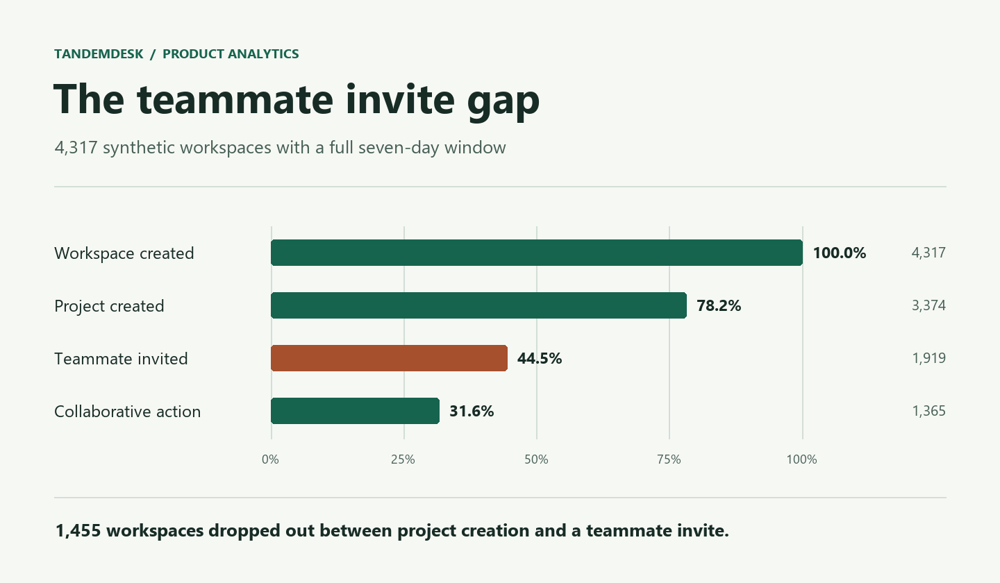

The decision
TandemDesk’s growth team has room to investigate one onboarding step. The ordered funnel puts the teammate invite first. Of 3,374 project creators, 1,455 did not reach the invite step within seven days. The event log records submitted invites. Interviews and delivery instrumentation would help explain where owners got stuck.
How the evidence was built
Python and SQLite reconstruct workspace outcomes from 46,002 synthetic events across 4,532 signups. The funnel requires the steps to occur in order, and activation, retention and payment each use a cohort old enough to observe the full window.
| Step | Reached | Share of eligible |
|---|---|---|
| Workspace created | 4,317 | 100.0% |
| Project created | 3,374 | 78.2% |
| Teammate invited | 1,919 | 44.5% |
| Collaborative action | 1,365 | 31.6% |
What the comparison shows
Among workspaces with 35 days of follow-up, 501 of 1,095 early activators returned in week four (45.8%), compared with 417 of 2,349 other workspaces (17.8%). The simulation builds differences in intent and activity into those groups. The 28-point association cannot estimate the effect of adding an invite prompt.
How to test the change
The proposed experiment randomizes workspaces after their first project if it was created within three days of signup. The historical activation baseline for that cohort is 38.7%. With 80% power and a two-sided 5% significance level, detecting a five-point lift takes 1,520 workspaces per arm, about 19 weeks of simulated enrollment and up to five more weeks of follow-up.
Limits of the evidence
Workspace activity and payments are simulated. The experiment is a proposal. Confirm event tracking and eligible traffic before using the plan in a real product.
Dashboard preview


Enlarge dashboard